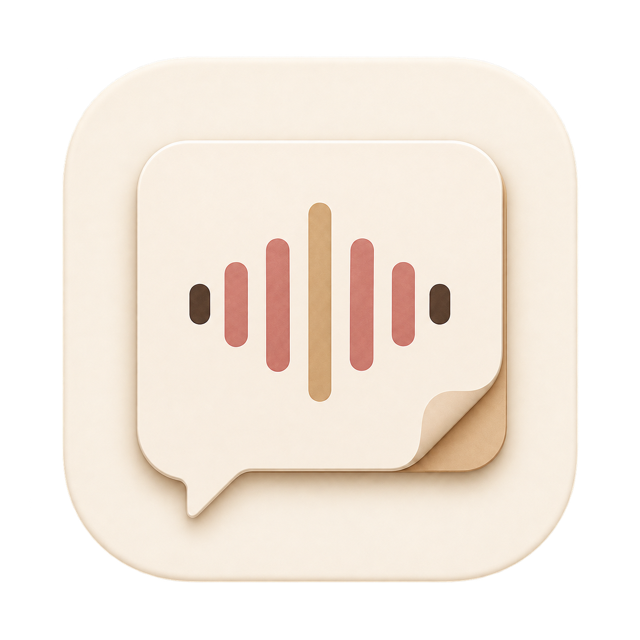

Their side of the table
AI notetakers sit in on interviews, capture every word, and hand the hiring team a structured report after every round — answers, follow-ups, impressions.
The counter-notetaker for job interviews
Companies increasingly run AI notetakers on interviews — every round ends with a written report on you. You’re expected to walk out with nothing but your memory of the questions. CounterNote is your side of the record: it captures the conversation and transcribes it locally on your Mac, so you leave every round with every question you were asked — word for word.
Free while in beta · Apple Silicon · macOS 13+
00:12:04Meeting audio Walk me through how you’d debug a flaky end-to-end test.
00:12:31You I’d start by isolating whether the test or the product is at fault —
00:14:52Meeting audio What would you redesign, looking back?
The tools at the table stopped being symmetrical. CounterNote is about closing that gap — for your own preparation, not anyone else’s report.
AI notetakers sit in on interviews, capture every word, and hand the hiring team a structured report after every round — answers, follow-ups, impressions.
You get your memory. By tonight, the exact phrasing of each question has already blurred into the other interviews you had this week.
CounterNote evens the scale. It records both sides of the conversation and transcribes it privately, so the questions they asked are on your record too — timestamped and ready to review.
Meeting audio and your microphone are captured as separate tracks, so what they asked and what you answered stay distinct in the transcript.
Local Whisper turns the recording into text after you stop — entirely offline. No audio and no text is ever uploaded.
Every segment carries a timestamp and its channel, so you can trace how the conversation unfolded and revisit each exchange — including exactly how a question was phrased.
Export the transcript as plain text and turn each interview into a study guide: what they asked, how you answered, what you’d do differently.
The best preparation for the next round is an honest look at the last one.
Open CounterNote before the interview and press Record. macOS asks for Screen Recording and Microphone access once.
When the interview ends, stop the recording. It’s saved straight to your Recordings library on your Mac.
Once, download the local Whisper model in Settings (~548 MB). Then select Transcribe audio on the recording — it runs entirely on your Mac.
Read the timestamped transcript, export it as text, and note what you’d answer differently in the next round.
CounterNote is local-first by design: recordings and transcripts are plain files under
~/CounterNote/recordings, transcription runs on-device, and the app ships
with no telemetry and no accounts.
Even this website loads no trackers, no webfonts, no analytics — what you see came straight from this page.
CounterNote is a young, openly developed beta. What that means for you today:

The beta is free and installs from a DMG. Only download it from this repository’s GitHub Releases page.
Download the latest betaarm64 DMG · macOS 13+ · compare the SHA-256 checksum in the release notes
No. Transcription runs locally with Whisper and the app has no upload path. The exact data flow and storage locations are documented in PRIVACY.md.
CounterNote isn’t legal advice, and rules differ by jurisdiction and employer. Follow the recording and consent laws that apply to you and the company’s policies. Where you ask, say what it is: “I’d like to record this interview and keep it locally for my own review — is that okay?”
Not yet. The beta supports Apple Silicon Macs on macOS 13 or newer.
No. Transcription runs after you stop recording. That’s deliberate: it keeps everything on-device and keeps your attention on the conversation, not on a screen.
Stop the recording and it’s saved to Recordings. Once, download the local Whisper model in Settings (~548 MB), then select Transcribe audio on the recording. The transcript is created entirely on your Mac.
Recordings and transcripts are plain files under
~/CounterNote/recordings. Delete a folder and it’s gone — no
accounts, no cloud copies.